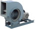
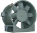
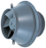
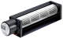

2026年
問題75 送風機に関する次の記述のうち，最も不適当なものはどれか．
(1)斜流式送風機は，空気が軸方向から入り，軸に対して傾斜して通り抜ける．
(2)遠心式送風機は，空気が羽根車の中を軸方向から入り，径方向へ通り抜ける．
(3)軸流式送風機は，空気が羽根車の中を軸方向から入り，軸方向へ通り抜ける．
(4)横流式送風機は，空気が羽根車の外周の一部から入り，軸方向へ通り抜ける．
(5)送風機のうち，ファンに分類されるものはブロワよりも吐出し圧力が低い．
2026年
問題75 正解（4） 頻出度AAA
横流式送風機は，空気が羽根車の外周の一部から入り，外周の一部へ通り抜ける．
羽根車と気流の様子は2026-75-1図参照．
2026-75-1図 羽根車と気流の様子
出典 三菱電機
https://www.mitsubishielectric.co.jp/ldg/ja/air/guide/support/knowledge/detail_03.html を基に作成
送風機の種類を大別すると遠心式送風機，軸流式送風機，斜流式送風機，横流式送風機に分けることができる（2026-75-2図～2026-75-5図参照）．
2026-75-2図 遠心式送風機（シロッコファンの例）

出典 テラル株式会社
https://www.teral.net/products/search/type?kishu=25300
2026-75-3図 軸流式送風機の例

出典 ミツヤ送風機株式会社
https://www.mitsuyaj.co.jp/products/axial_flow/axial_flow_ap.html
2026-75-4図 斜流式送風機の例

出典 テラル株式会社
https://www.teral.net/products/search/type?kishu=550630
2026-75-5図 横流式送風機の例

出典 オリエンタルモーター株式会社
https://www.orientalmotor.co.jp/ja/products/fan-motors/mfd
-(5) 送風機は，圧力98kPa以上のものをブロワ，それより低い圧力のものをファンと呼ぶ．空気調和用に使用される送風機は，ほとんどが1.5kPa以下のファンである．